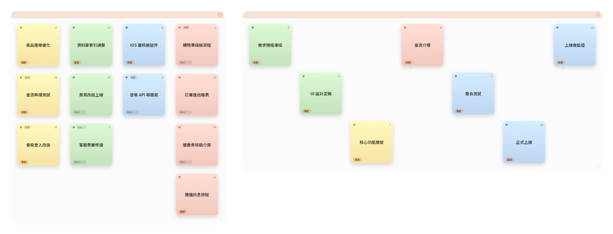
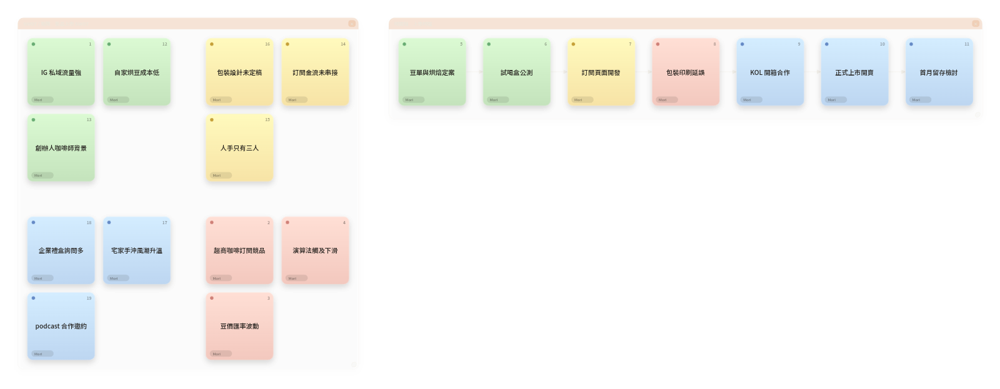

五個角色、五張現成的板。先看成品長什麼樣,再照「講法示範」講,你的板就長出同款。
兩條路,挑一條:
初次進入會有引導和 6 步互動導覽,跟著走一遍最快;之後想重看,點右上的「?」就能重開。
把現成逐字稿丟給 agent,AI 自動整理成卡片、連線與圖框 —— 用講的也是同一條路。
五個範例各用兩種板型,加起來剛好把十種板型全走過一遍。每種板型的顏色語意不同,各節會講清楚。
需求訪談時即時整理主題、待辦、決議與風險,並排出專案分工架構。範例場景是診所預約系統的需求會議。

會議白板那張:「LINE 預約整合」是黃色主題卡,「整理現有掛號流程」是綠色待辦、掛著負責人美玲,「首版只做預約掛號」是藍色決議,「HIS 廠商配合度低」是紅色風險、還連到健保卡介接那張。組織架構那張:專案負責人志明在最高層(藍),底下三個組(綠),組員是黃,HIS 廠商窗口是外部(紅)。
適合需求訪談、客戶會議,還有任何「散會時想直接拿到待辦和決議」的場合。
把口頭討論的系統分層畫成架構圖,再補一條含判斷分支的預約流程。

架構圖那張:LINE LIFF 頁面、診所後台是前端(藍),API 閘道、預約服務、通知服務是後端(綠),PostgreSQL、Redis 是資料層(黃),LINE 訊息 API 和 HIS 掛號系統是外部系統(紅);箭頭是「誰呼叫誰」。流程圖那張:「使用者點預約」開始(綠),選科別、選時段是步驟(黃),「時段尚有名額?」是判斷(藍),從它岔出兩條 —— 有名額就寫入,沒名額走「提示改選時段」的例外(紅)。
適合系統設計討論、架構 review —— 邊講邊畫,散會時架構圖已經在那裡。
用看板追 Sprint 任務狀態,再把 Q3 里程碑串成有負責人的依賴鏈。

看板那張:「金流串接測試」是黃色進行中、負責人志明、掛 #金流 標籤;「發票 API 等廠商」是藍色阻塞;「首頁改版上線」這類綠色是已完成。甘特那張:UI 設計定稿(雅婷)綠色已完成,核心功能開發黃色進行中,「金流介接」紅色延遲,後面的整合測試、正式上線、上線後監控照依賴鏈連起來,每張卡都有負責人。
適合 sprint 規劃和每日站會 —— 講狀態就是更新狀態,卡片自己換欄。
以手沖咖啡訂閱盒為例,邊開會邊長出 SWOT 四象限與上市時間軸。

SWOT 那張:「IG 私域流量強」落在綠色優勢象限,「訂閱金流未串接」「人手只有三人」是黃色劣勢,「宅家手沖風潮升溫」是藍色機會,「超商咖啡訂閱競品」是紅色威脅 —— 講到哪個象限,卡片就排進哪格。時間軸那張:豆單定案、試喝盒公測已完成(綠),訂閱頁面開發進行中(黃),「包裝印刷延誤」紅色,KOL 開箱、正式上市、首月留存檢討是規劃中(藍),依時間先後串成一條線。
適合上市規劃、行銷腦力激盪 —— 想法一句句丟,象限和時程同時成形。
用心智圖拆展店評估面向,再用魚骨圖追來客數下滑的根因。

心智圖那張:中心是藍色的「二號店展店評估」,往外發散地點商圈、財務資金、人力營運、品牌行銷四條綠色主幹,每條主幹再長出黃色分支(捷運站週邊人流、回本期試算、店長人選培訓……)。魚骨那張:魚頭是藍色的「來客數下滑三成」,商品、服務、環境、行銷四類主因是綠色魚骨,各自掛黃色次要原因;「隔壁新開競品店」標紅色關鍵因素,接在環境因素那條骨上。
適合問題拆解和根因分析 workshop —— 你負責問對問題,結構 Mori 來畫。
工具列徽章可以手動切板型;AI 聽到對應的內容、切到新主題時,也會自動開對應的圖。同一張畫布可以同時有好幾張圖,排版引擎保證卡片和圖框不互疊。
| 板型 | 講什麼會長出它 | 顏色語意 |
|---|---|---|
| 會議白板 | 一般會議內容:主題、待辦、決議、風險 | 黃=主題 · 綠=待辦 · 藍=決議 · 紅=風險 |
| 組織架構圖 | 分工與隸屬:「負責人是誰、下面分幾組」 | 藍=最高層 · 綠=主管/部門 · 黃=基層職位 · 紅=外部/兼任 |
| 流程圖 | 步驟先後與判斷:「先…再…,沒名額就走例外」 | 綠=開始 · 黃=步驟 · 藍=判斷/分支 · 紅=結束/例外 |
| 系統架構圖 | 系統元件與呼叫:「前端打到 API,服務讀資料庫」 | 藍=前端/介面 · 綠=後端/服務 · 黃=資料/儲存 · 紅=外部系統 |
| 心智圖 | 拆主題面向:「中心放…,拉幾條主幹」 | 藍=中心 · 綠=主幹 · 黃=分支 · 紅=細節 |
| 看板 Kanban | 任務狀態:「進行中、完成了、被卡住」 | 紅=待辦 · 黃=進行中 · 綠=已完成 · 藍=阻塞/擱置 |
| SWOT | 優勢、劣勢、機會、威脅四象限分析 | 綠=優勢 S · 黃=劣勢 W · 藍=機會 O · 紅=威脅 T |
| 時間軸 | 里程碑與時程先後:「…排在…後面」 | 綠=已完成 · 黃=進行中 · 藍=規劃中 · 紅=延遲/風險 |
| 魚骨圖 | 追根因:「問題是…,主因分幾類」 | 藍=問題/結果 · 綠=主因分類 · 黃=次要原因 · 紅=關鍵因素 |
| 甘特圖 | 任務鏈與負責人:「照鏈排、誰負責」 | 綠=已完成 · 黃=進行中 · 藍=未開始 · 紅=延遲/卡關 |
看完成品,輪到你講了。開一張板,挑一個最像你下一場會議的範例,照著講。
試玩站跑在 Render 免費方案,閒置 15 分鐘會休眠 —— 第一個進來的人要等 30–60 秒冷啟動,之後就正常。
做了一張漂亮的 SWOT、回顧板或 OKR 板?匯出「畫板存檔(.json)」,開 PR 投到 repo 的 templates/(投稿規範)。收錄後會列進 app 內範例庫的「社群範本」區,任何人用一條 ?room=新房號&board=你的範本id 深連結就能在自己的房間長出你的板 —— 範例庫裡每份範本旁都有「複製分享連結」。